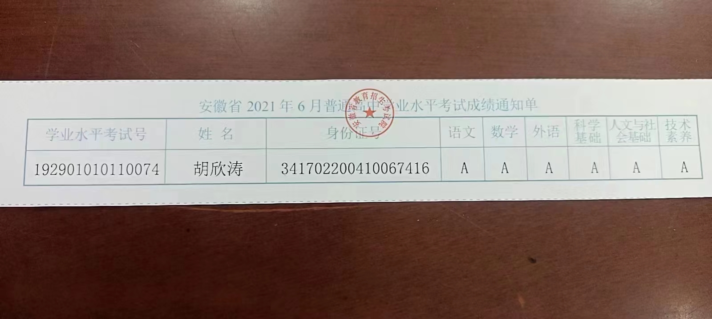

Highlight
- A paper "Surgical Triplet Recognition via Diffusion Model" submitted to MICCAI 2024
outcome not yet published
- Internship at Multimodal and Affective Laboratory of Hefei Industry University Supervisor's website
- Tutoring at USYD school of Computer Science USYD school of computer science
- Dalyell scholarship (USYD’s excellent student scholarship) USYD Dalyell
- Current annual WAM of 88.7 in USYD (University of Sydney) USYD Transcript
- UCLA summer session: two months of study in UCLA UCLA Transcript
- IELTS average 7.5 (English fluency proof)
you may need to zoom the image
- Score 643 in Chinese College Entrance Exam (GaoKao), ranking 1817th out of 543,000 (top 0.3%) in the province (viewed as 98 or above in ATAR by USYD) Government-issued certificate
- Receive A for all the subjects in Graduation Exam (Huikao)
- National third prize in National English Proficiency Test for Secondary school students
- Provincial third prize in National Math Olympics tournament
- Provincial twice prize in National Physics Tournament

